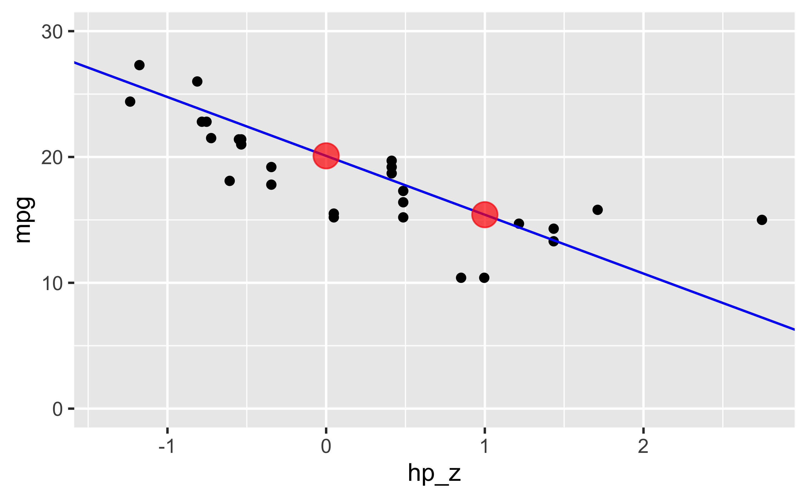
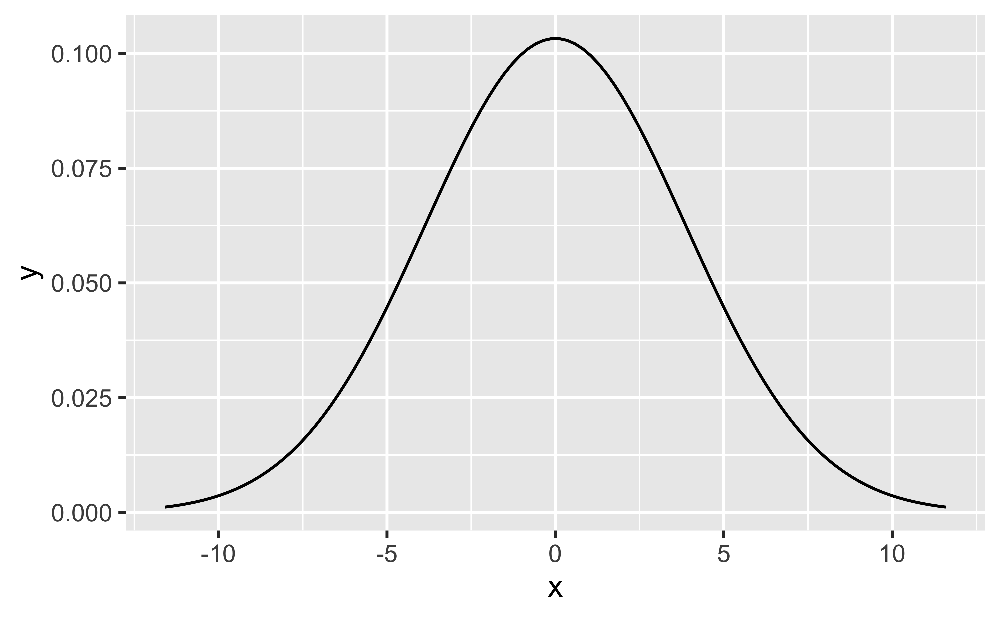
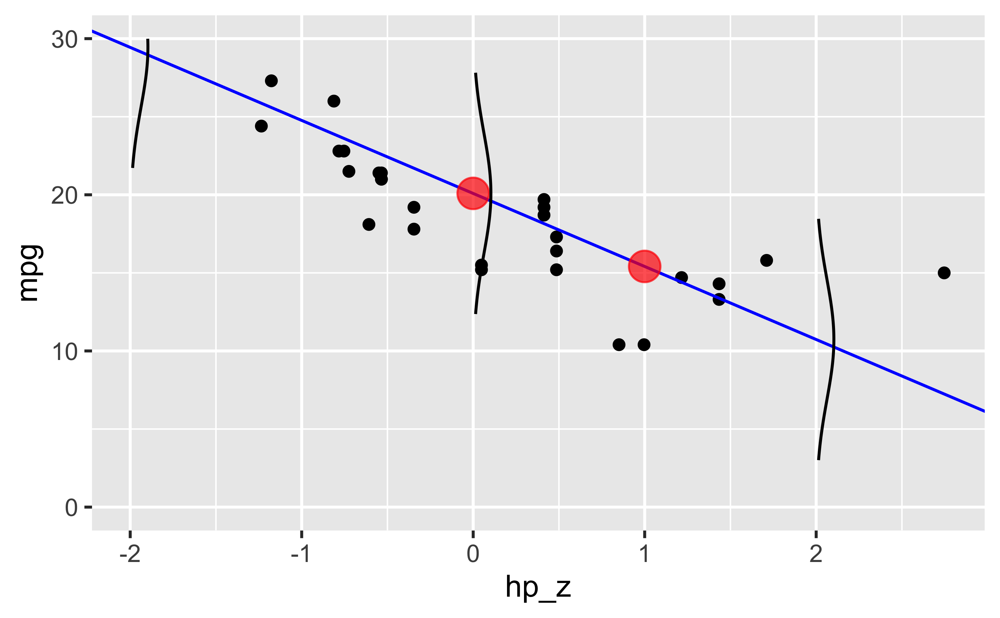

A residual is defined as
\(r_i = y_i - X_i \hat{\beta}\).
That is, a residual is a tangible thing in the sense that it describes observables (cf. Gelman 2021, chap. 11.3, p. 161). That is, the residuals are the difference between observed and predicted values.
In contrast, the error term is defined as the difference between the observed value and the true (unobserved) value:
\(e_i = y_i - X_i \beta\).
The residuals can be thought of as estimates of the errors source.
(Also see this).
Frequently, it is assumed that the errors are distributed normally.
Let’s visualize error terms assuming normality.
data(mtcars)
library(tidyverse)
library(glue)Let’s say we’d like to illustrate the errors for this regression:
mtcars <-
mtcars %>%
mutate(hp_z = (hp - mean(hp)) / sd(hp))Any NAs?
mtcars %>%
summarise(sum(is.na(hp_z)))## sum(is.na(hp_z))
## 1 0No.
lm1 <- lm(mpg ~ hp_z, data = mtcars)
coef(lm1)## (Intercept) hp_z
## 20.090625 -4.677926Define some constants:
z <- 3 # go until 3 sd's away from the mean
avg <- 0 # mean value
sigma <- sigma(lm1)
b0 <- coef(lm1)[1]
b1 <- coef(lm1)[2]preds <- c(
predict(lm1, data.frame(hp_z = 0)) ,
predict(lm1, data.frame(hp_z = 1))
)
p1 <-
mtcars %>%
ggplot() +
aes(x = hp_z, y = mpg) +
geom_point() +
geom_abline(slope = b1, intercept = b0, color = "blue") +
annotate("point", x = 0, y = predict(lm1, data.frame(hp_z = 0)),
color = "red", size = 5, alpha = .7) +
annotate("point", x = 1, y = predict(lm1, data.frame(hp_z = 1)),
color = "red", size = 5, alpha = .7) +
ylim(0, 30)
p1
Here’s a vector holding the densities of a normal along with the x-values:
d <-
tibble(
x = seq(-z*sigma, z*sigma, length.out = 100),
y = dnorm(x, mean = avg, sd = sigma)
)Let’s plot that:
ggplot(d) +
aes(x = x, y = y) +
geom_line()
In all its glory.
But not what we wanted.
vertical_dnorm <- function(predictor_value, mod, pred_y, k = 2){
sigma_mod <- sigma(mod)
#predictor_name <- coef(lm1)[2] %>% names()
out <-
tibble(
y = seq(-k*sigma, k*sigma, length.out = 100),
x = dnorm(y, mean = 0, sd = sigma_mod)
) %>%
mutate(x = x + predictor_value,
y = y + pred_y)
return(out)
}We have not standardized the height of the normal curve in the plot. The normal curve of the errors should appear equally heigh, no matter what the scale of the x axis is. Let’s take care of that some other time.
#debug(vertical_dnorm)
d1 <- vertical_dnorm(predictor_value = 0, mod = lm1, pred_y = predict(lm1, tibble(hp_z = 0)))
d2 <- vertical_dnorm(predictor_value = -2, mod = lm1, pred_y = predict(lm1, tibble(hp_z = -2)))
d3 <- vertical_dnorm(predictor_value = 2, mod = lm1, pred_y = predict(lm1, tibble(hp_z = 2))) head(d)## # A tibble: 6 × 2
## x y
## <dbl> <dbl>
## 1 -11.6 0.00115
## 2 -11.4 0.00137
## 3 -11.1 0.00164
## 4 -10.9 0.00195
## 5 -10.7 0.00231
## 6 -10.4 0.00272p1 +
geom_path(data = d1, aes(x,y)) +
geom_path(data = d2, aes(x,y)) +
geom_path(data = d3, aes(x,y)) 
Yeah.
The sigmas look quite wide though. Let’s check:
sigma(lm1)## [1] 3.862962Ok, the plot appears reasonable.